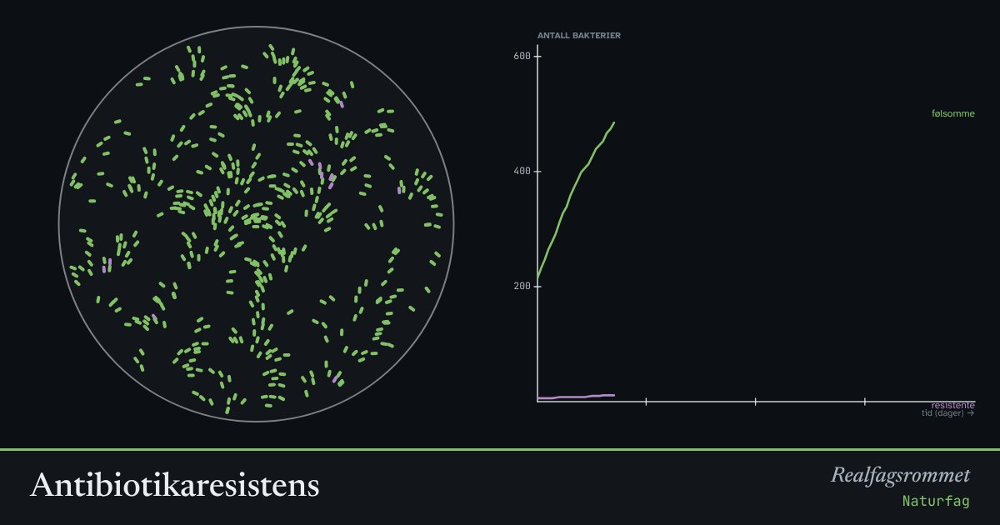

Antibiotikaresistens
Noen få bakterier tåler antibiotikaen. Når de andre dør, får de resistente plass til å formere seg. Avbryter du kuren for tidlig, kan de resistente ta over.
Start animasjonen
Formler
Om animasjonen
Grønne bakterier er følsomme for antibiotika. Lilla har en mutasjon som gjør dem resistente. I starten er de svært få.
Antibiotikaen dreper de følsomme raskt, men de resistente nesten ikke. Hvis kuren varer lenge nok, klarer immunforsvaret å ta de få som er igjen. Det er ikke med i modellen her, men det er grunnen til at det er viktig å fullføre kuren.
Hver gang antibiotika brukes, gir det de resistente en fordel. Derfor skal antibiotika bare brukes når det trengs. Dette er naturlig utvalg i praksis.
Prøv dette
- Gi en kur, vent til bakteriene vokser igjen, og gi en ny kur. Hva skjer med andelen resistente?
- Hvorfor skal du ikke spare på antibiotika fra en gammel kur?
- Hvorfor bruker Norge mindre antibiotika enn mange andre land, og hvorfor er det viktig?
- Forklar hvordan antibiotikaresistens er et eksempel på evolusjon.
Kompetansemål
- Naturfag: Helse og livsstil, og hvor pålitelig informasjonen er
- Biologi 1: Antibiotika og resistens